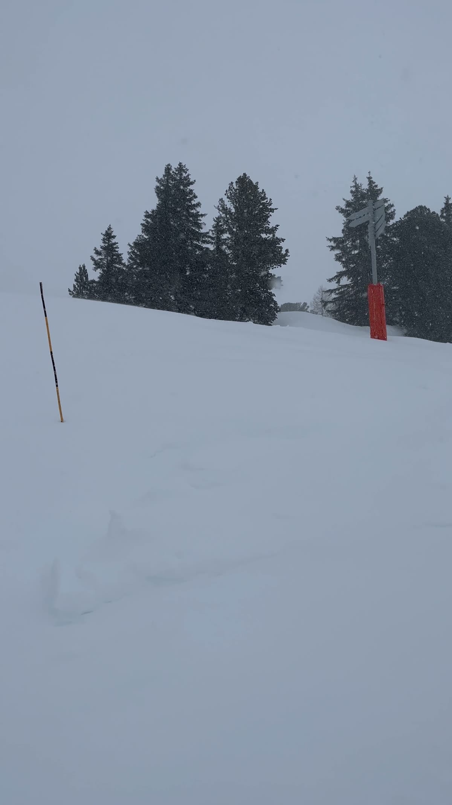
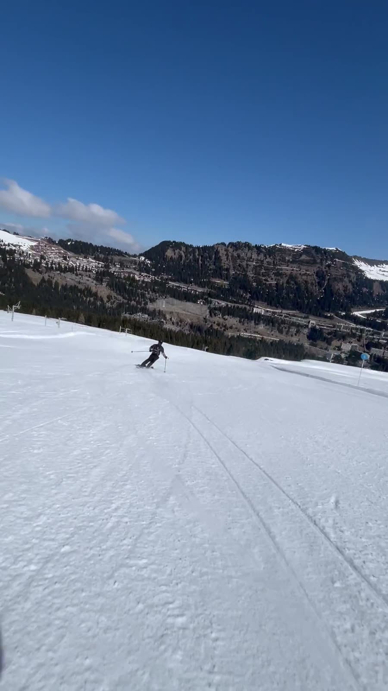
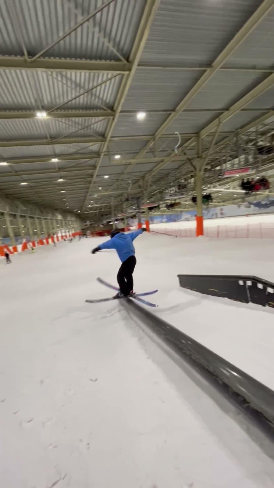
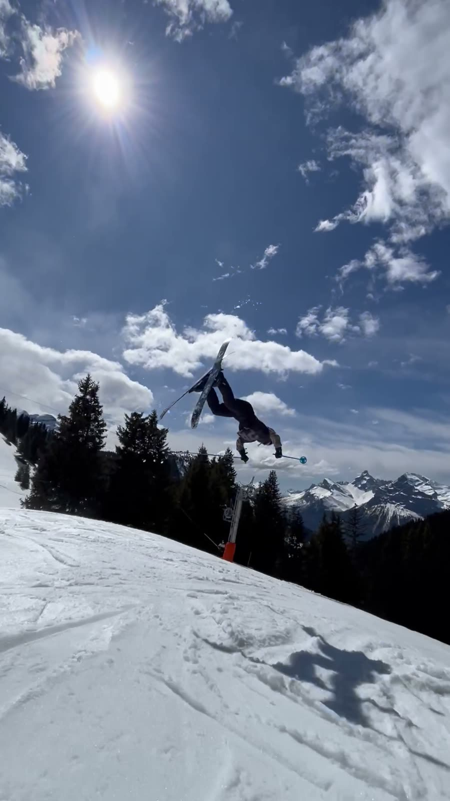
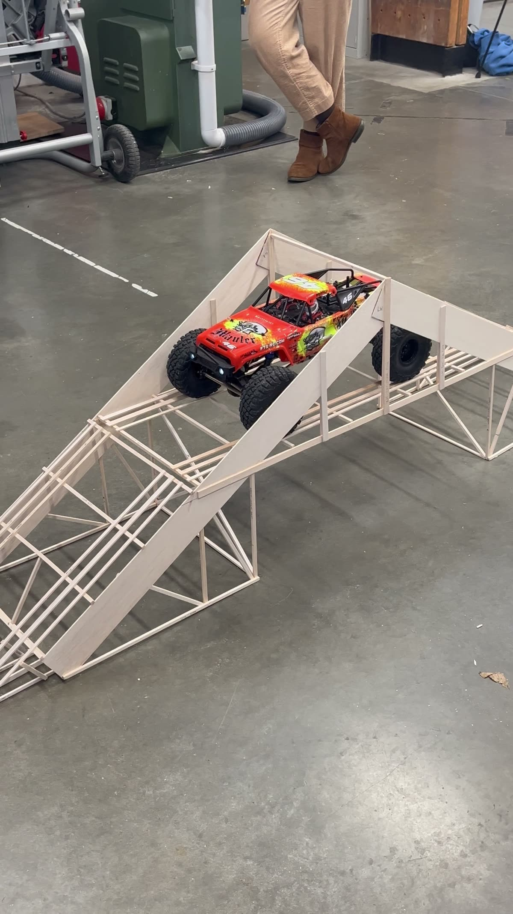
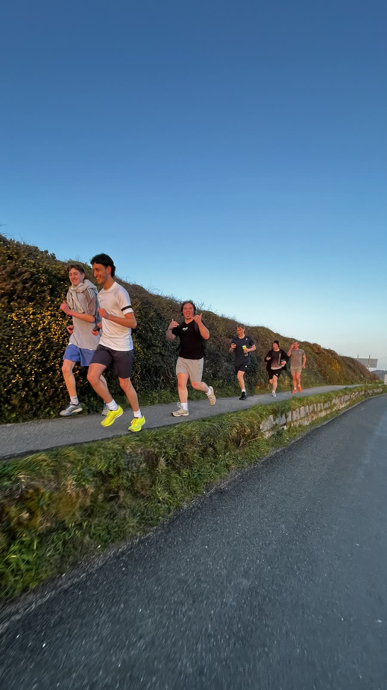

WORK IN PROGRESS · real footage in, a few tiles still waiting on assetsv0.4
On skis at three. A bike business at sixteen. A TikTok that found 89,000 people.
I'm Jackson. There's no tidy title for what I do, so this page just shows it: engineering, skiing, and a habit of starting things that end up working. Everything below is mine, built, filmed, repaired or grown.
millions of views on @jacksontigerb15 years behind a cameraall terrain on skis since three
00 — the pattern
Things I've started from zero — and where they got to
The full CV is further down the page. This is the short version.
A Twitch channel in my gaming years→ 1.3k followers
Brocklebikes, a repair business started at sixteen→ 495+ bikes fixed
A university run club, founded in January→ 25 runners a week by June
@jacksontigerb, started from nothing in 2024→ 89,000 followers in seven months
One speculative email to Curtin University→ a research post in Perth
This website→ you're looking at it
01 — case study: @jacksontigerb
Zero to 89,000 in seven months — run like an engineering project
I started @jacksontigerb in 2024, mixing learning Japanese with skiing and the rest of an active life. I ran it the way I run any build: post daily, read the numbers, keep what works, drop what doesn't. It found an audience fast.
0 → 89kfollowers in ~7 months
80.9kwhere it sits now
millionsof views across the account
One video, 1.2 million views — and 5,600 new followers from it
video analysis / 3,956 hours watched / 61% retention
Not a one off — six figures, over and over
1.1m / 659k / 269k / 169k / 128k
80.9k followers, 2.5m likes — where it stands today
@jacksontigerb / july 2026
what I took from it
The account taught me which trends to ride, which to skip, and that cadence beats polish. Growing it alone also meant doing every job at once: ideas, filming, editing, captions, posting, replying to comments, reading the analytics after. That's the same loop a brand channel runs, just smaller.
02 — fifteen years behind a camera
Editing isn't new to me — it's been there the whole time
Long before the TikTok, there were scooter edits, gaming videos and a Twitch channel. The tools changed, the habit did not.
2010sCHILDHOOD EDITS
Scooter & trampoline — where it began
photoshop / vegas
Live streaming — on camera, unscripted
twitch / 1.3k followers
youtubeGAMING VIDEOS
Long form edits — learning the craft
premiere / resolve
2024OBAN VLOG
A mountain day, filmed — Oban, Scotland
vlog / on trip
tools I actually use
Premiere Pro / Photoshop / DaVinci Resolve / Sony Vegas / CapCut / Adobe Creative Cloud
03 — on snow
On skis since three — and just as happy holding the camera
Comfortable across all terrain, piste or freeride, and used to filming while I ride. This is the part of the job you can't fake, and it's home ground.




Different resorts, different conditions, the same footage habit. If a plan changes on the mountain, that's normal, not a crisis.
04 — I also build things
Carv is a ski company built by engineers — I get the product on both sides
A Master's in materials engineering and a lot of hands on projects. Useful context for a brand whose whole product is a sensor for skiers.
ExeterSOLAR BOAT · on the water
Solar racing boat — designed, machined, raced
CAD / fabrication / Netherlands
Maze solving robot — sensors and soldering
electronics / control logic
since 2020BROCKLEBIKES · workshop
Brocklebikes — a business I started at sixteen
495+ repairs / self taught / customer facing
Curtin, PerthCLEAN HYDROGEN · lab work
Photocatalytic water splitting — clean hydrogen research
visiting research associate / surface coatings / bubble dynamics

The balsa bridge — the only one to hold under full load
spotted the flaw before test day / team project
A £50 hydroturbine — tested in a real stream
design to field test / renewable energy
Idea to tested prototype, and the person explaining it to camera afterwards.
05 — the research, up close
A PFAS free waterproof coating — built with Finisterre
My Master's project, and the one that pulls the whole page together: the outdoors, materials science and a more sustainable way of doing it. I'm synthesising a PFAS free superhydrophobic coating for outdoor textiles, supervised by Prospero Taroni-Junior and working with Abbie Spence at Finisterre.
labCOATING · water beading on treated fabric
PFAS are the fluorine chemistry that makes most waterproof gear work, and they're turning up where they shouldn't, in water, in soil, in us, with a growing link to real health risks. Finding a fluorine free version that still beads water in the wet and the cold felt like a problem worth a year of my life.
Finisterre already build their kit on PFAS free chemistry, so working with them means the research points at something people might actually wear. Read more about the project, the nanoparticle side and how I make the coating.
labSEM / characterisation · your images
fieldFINISTERRE · product / testing shots
06 — education & awards
The degrees behind it — materials and energy
A Master's in advanced materials on top of an engineering degree, with a couple of firsts along the way.
MSc Advanced Materials Science — University College London
London · research year
The home of the PFAS free coating project above. Day to day it's synthesis in the lab and a lot of hours on the characterisation suite, SEM, TEM, FTIR, XRD and XPS.
09/2025 – 09/2026
BEng Renewable Energy Engineering — University of Exeter, 2:1
Exeter · mechanical and electrical grounding
My dissertation on redox flow batteries for renewable energy earned a first, and so did the field trip module, where I pitched wind turbine blade recycling to industry partners Nadara and ReBlade.
09/2022 – 07/2025
07 — experience beyond the studio
Roles that were really about people — and staying calm when it is busy
Community building, teaching and customer facing work. Most of a social role is people, and this is where I have done it.
Run Club Founder & President — Falmouth Running Society
Started a club and grew a community
Founded and led a university running club, growing it to 200+ followers and weekly sessions of up to 25 runners in a single semester.
01/2024 – 06/2024
Digital Hub Student Ambassador — University of Exeter
Technical support, up to 100 students a day
Provided troubleshooting in the library IT department, helping up to a hundred students a day, calm and quick under pressure.
09/2024 – 06/2025
Student Representative — University College London
Relaying feedback in departmental meetings
Gathering and relaying course feedback, helping the department spot and address student concerns.
09/2025 – present
Customer Facing Roles — cafés and a lettings office
Drury 188-189 · Castle Beach Café · Frank Harris & Co
Fast, accurate service across two café roles and a sales and lettings office, handling orders, enquiries and day to day admin while staying calm in busy settings.
2023 – present
08 — the toolkit
What I can actually do — hands on and technical
The creative tools I edit with, plus the technical and workshop skills behind the projects.
creative & contentPremiere Pro · Photoshop · DaVinci Resolve · Sony Vegas · CapCut · iPhone shooting
I treat AI as a superpower — and I actually use it
Not a buzzword on a slide. It's wired into how I research, plan and clear the repetitive work off my plate.
My daily driver is Claude Code with MCP integrations I set up myself, plugged into real workflows. I use it for content research and ideas, for turning a rough thought into something I can test quickly, and for taking the dull jobs off my plate, logging, tracking and reporting.
This site was planned, designed and built with an AI agent I set up myself.
10 — off the mountain
The chairlift test — the rest of me
Surf, climb, the London Marathon, Japanese, piano and guitar, chess, and I build my own PCs. I like being outside and I like meeting people, which is most of this job.
CLIMB

PIANO / GUITAR / 日本語
PC BUILDS / CHESS
11 — let's talk
Talk to me about next winter.
From August to late November 2026 I'm at Curtin University in Perth, researching clean hydrogen. From mid September I can be set up and working online, and from December I'm on the ground, London, Park City or a resort, wherever the season needs me.